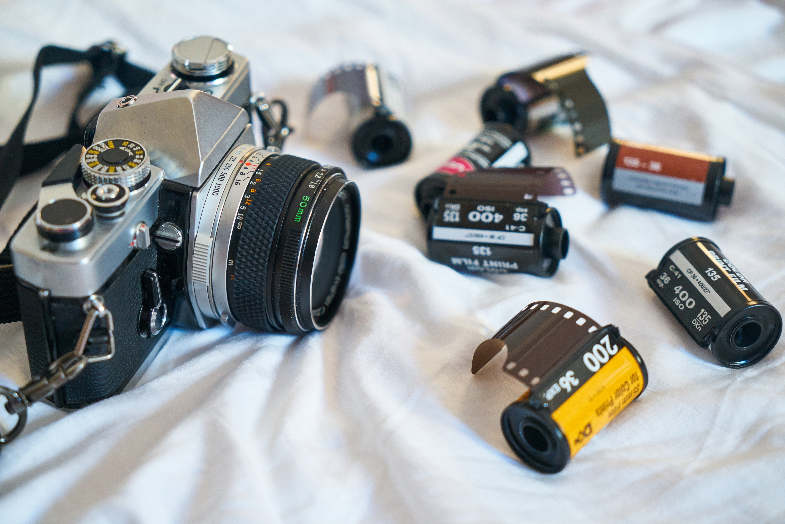
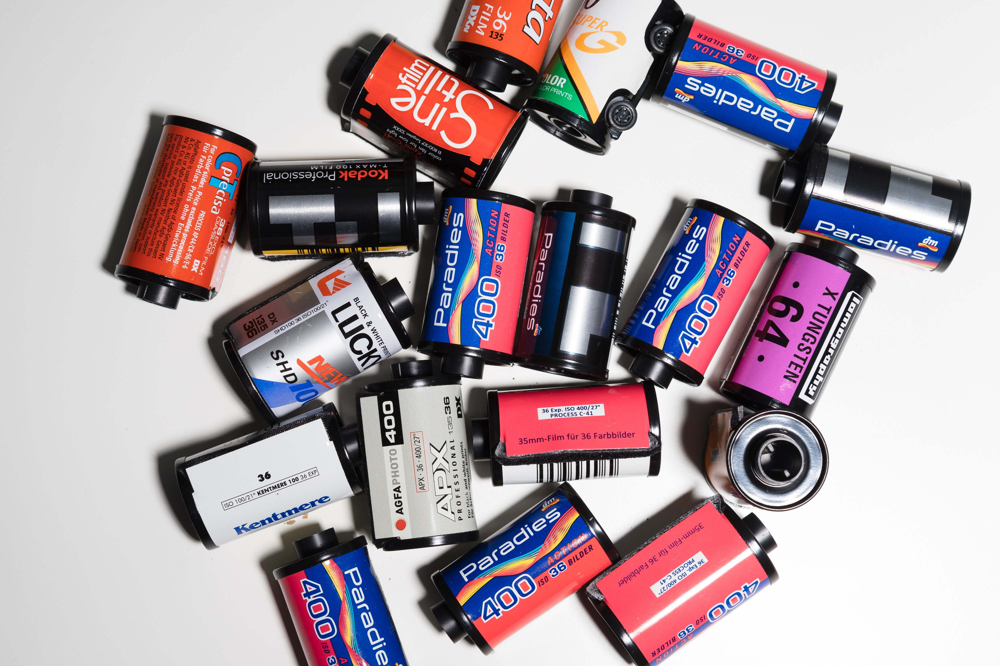

Analog Archives. Celebrating Life Through Film
Immerse yourself in the captivating world of analog photography, where each frame holds a timeless essence. Discover the beauty of grain, the depth of textures, and the nostalgia that resonates through every image.

Welcome to our website, a comprehensive guide to the captivating world of film photography! Whether you're a curious beginner or a budding enthusiast, our platform is designed to meet the needs of young adults who are eager to explore the art and technique of analog photography.
Film photography has experienced a remarkable resurgence in recent years, captivating a new generation with its timeless appeal and unique aesthetic. This resurgence has created a growing community of young adults who are eager to learn the intricacies of shooting film, developing negatives, and creating stunning prints.
